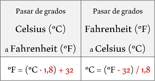

Ejercicio 1
Enunciado
Generar una función que permita ingresar por parámetro algún dato, ya sea ingresado por el usuario o declarado anteriormente, y mostrar por consola el tipo de dato que es.

Ejercicio 2
Enunciado
Dado dos números ingresados por el usuario, se pide realizar una función que devuelva la resta de ambos números. Mostrar el resultado por la consola.

Ejercicio 3
Enunciado
Generar una función que dada una temperatura en grados Celsius convierta ésta a grados Farenheit. Grados Fahrenheit = (grados centígrados × 9/5) +32.
